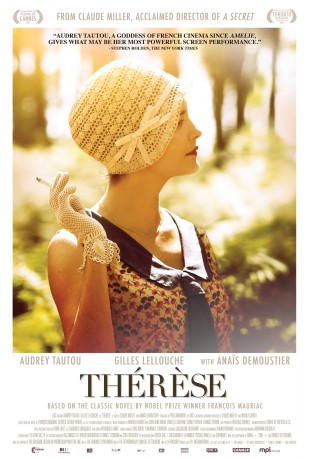

#9979 Thérèse
Alternativ: Therese
 
 IMDB-Wertung: 6.1 / 10
IMDB-Wertung: 6.1 / 10  Metascore: 49
Metascore: 49 
The year is 1926. In the Landes region, free-spirited Thérèse Larroque, the daughter of a wealthy pinery owner and radical-socialist politician, marries Bernard Desqueyroux, another pinery owner. Although she does it half-heartedly, she thinks that marriage may help her to "sort out all the ideas in her mind". But her disappointment is great. Her wedding night is all but fascinating and when she becomes pregnant she realizes the baby matters more to Bernard than herself. While Thérèse stifles in her husband's beautiful residence among stiff in-laws who do not think high of her, ideas keep on roaming her mind.
Jahr: 2012
Dauer: 109 Minuten
FSK: 6
Land: Frankreich Studio: Capelight PicturesTonspuren:
Untertitel: Deutsch,
Auflösung: 1080p (1920x800) Größe: 4280 MB
Genre: Drama
Regisseur: Claude Miller
Drehbuch: François Mauriac, Claude Miller, Natalie Carter
Soundtrack:
Darsteller:
 Audrey Tautou als Thérèse Larroque - épouse Desqueyroux
Audrey Tautou als Thérèse Larroque - épouse Desqueyroux Gilles Lellouche als Bernard Desqueyroux
Gilles Lellouche als Bernard Desqueyroux Anaïs Demoustier als Anne de la Trave
Anaïs Demoustier als Anne de la Trave- Stanley Weber als Jean Azevedo
 Yves Jacques als Maître Duros
Yves Jacques als Maître Duros- Catherine Arditi als Madame de la Trave
- Isabelle Sadoyan als Tante Clara
- Francis Perrin als Monsieur Larroque
- Max Morel als Balion
- Françoise Goubert als Balionte
- Jean-Claude Calon als Monsieur de la Trave
- Alba Gaïa Bellugi als Thérèse Larroque à 15 ans
- Matilda Marty-Giraut als Anne de la Trave à 15 ans
- Gérard Bayle als Pedemay
- Bernard Lebeau als Ponte Bordeaux
- Frédéric Kneip als Le juge
- Jack Delbalat als Le pharmacien Darquey
- Jérôme Thibault als Deguilhem
- Francis Ayliès als Le prêtre
Datei: X:\2012(N-Z)\Thérèse (2012, FSK6, 1920x800).mkv seit 15.11.2018
Festplatte: HD 2012(N-Z)-2013(A-H)
 Es gibt insgesamt 138 Filme in der Gruppe '2012(N-Z)'
Es gibt insgesamt 138 Filme in der Gruppe '2012(N-Z)'